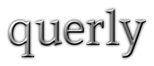

Il prestanome di Grenzgaenger, lo Youtuber querly, ha oggi oltre 835.000 abbonati YouTube ei suoi video hanno finora registrato oltre 95 milioni di visualizzazioni. I film, spesso della durata di una decina di minuti, mostrano principalmente lui e gli amici in tour con le loro moto da enduro. Apparentemente, l'attenzione si concentra sullo stile di vita di viaggiare attraverso diversi paesi su una moto e divertirsi con impennate e altri trucchi. Cosa non si vede: la faccia di Querly.